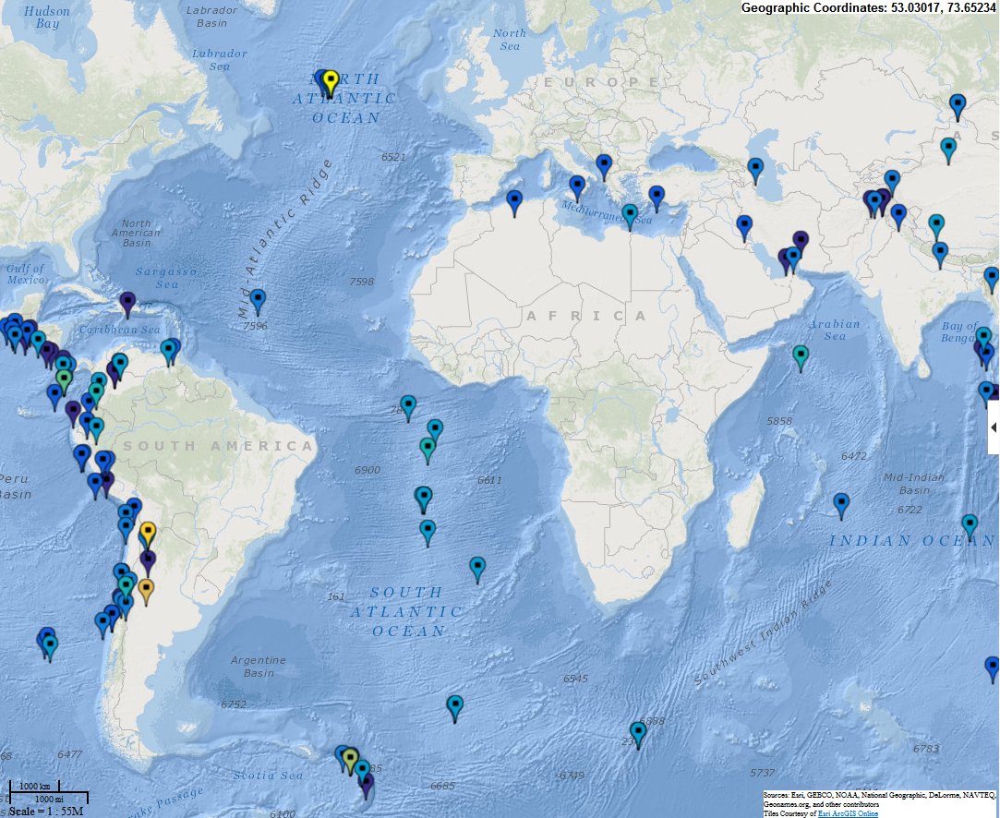
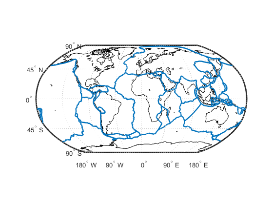
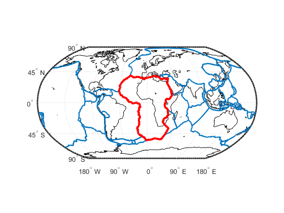
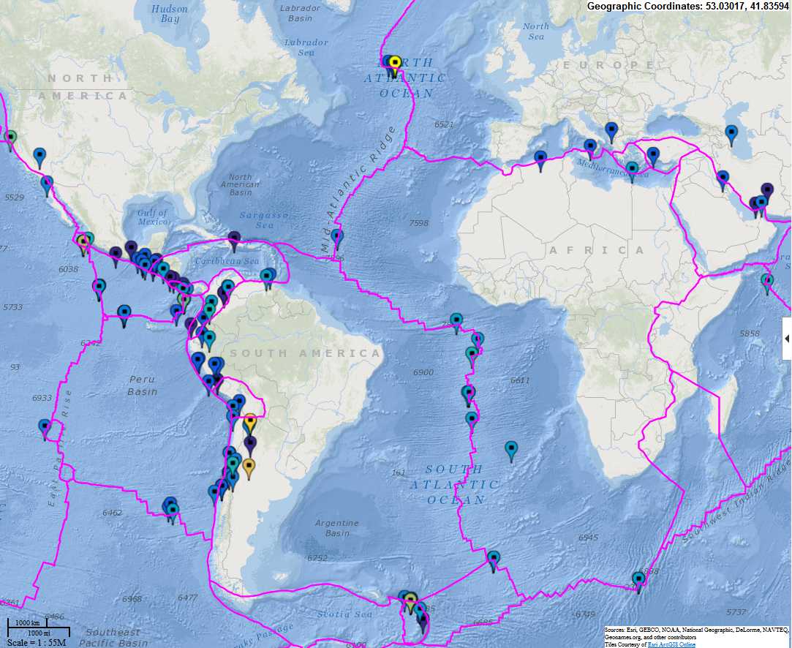

Map Recent Earthquakes
We'd like to read in locations of recent earthquakes from USGS website and plot them on an interactive map.
Contents
- Read locations from USGS
- Extract information per quake
- Convert to struct to table
- What's in the table?
- Add location info to the table
- Sort table by earthquake magnitude
- Find the biggest quake
- First find range of earthquake magnitudes
- Plot earthquake locations on webmap
- Map with Ocean Basemap to see alignment with some fracture zones
- Load in plate boundaries
- Find the first plate
- Make array of geopoints from the plate boundaries
- Draw plate boundaries on map
Read locations from USGS
Load data from real-time datafeed. Read all the earthquakes in the last month magnitude 4.5 and greater. Find information about the data here: http://earthquake.usgs.gov/earthquakes/feed/v1.0/glossary.php
Find the last 30 days, 4.5 or greater. http://earthquake.usgs.gov/earthquakes/feed/v1.0/summary/4.5_month.geojson
Could look for last week if we preferred. http://earthquake.usgs.gov/earthquakes/feed/v1.0/summary/4.5_week.geojson
options = weboptions('Timeout',10); quakeDataJSON = webread('http://earthquake.usgs.gov/earthquakes/feed/v1.0/summary/4.5_month.geojson', options);
Extract information per quake
quakeDataInfo = [quakeDataJSON.features.properties]; quakeDataLocation = [quakeDataJSON.features.geometry];
Convert to struct to table
open quakeTable to see what it looks like
quakeTable = struct2table(quakeDataInfo); quakeTable(1:5,:)
ans =
mag place time updated tz url detail felt cdi mmi alert status tsunami sig net code ids sources types nst dmin rms gap magType type title
___ ______________________________________ __________ __________ ___ _____________________________________________________________ ___________________________________________________________________________ ____ _____ ___ _____ __________ _______ ___ ____ __________ ______________ _______ ___________________________________________________________________________ ___ _______ ____ _____ _______ ____________ ______________________________________________
5.2 '122km ENE of Tairua, New Zealand' 1.4247e+12 1.4247e+12 720 'http://earthquake.usgs.gov/earthquakes/eventpage/usc000tsfu' 'http://earthquake.usgs.gov/earthquakes/feed/v1.0/detail/usc000tsfu.geo...' [ 0] [ 1] [] [] 'reviewed' 0 416 'us' 'c000tsfu' ',usc000tsfu,' ',us,' ',cap,dyfi,general-link,geoserve,nearby-cities,origin,phase-data,tecton...' [] [2.622] 1.17 [124] 'mb' 'earthquake' 'M 5.2 - 122km ENE of Tairua, New Zealand'
4.9 '134km SSW of Taron, Papua New Guinea' 1.4247e+12 1.4247e+12 600 'http://earthquake.usgs.gov/earthquakes/eventpage/usc000tsfg' 'http://earthquake.usgs.gov/earthquakes/feed/v1.0/detail/usc000tsfg.geo...' [ 0] [ 1] [] [] 'reviewed' 0 369 'us' 'c000tsfg' ',usc000tsfg,' ',us,' ',cap,dyfi,general-link,geoserve,nearby-cities,origin,phase-data,tecton...' [] [1.559] 0.66 [ 90] 'mb' 'earthquake' 'M 4.9 - 134km SSW of Taron, Papua New Guinea'
4.6 '3km SSW of Oami, Japan' 1.4247e+12 1.4247e+12 540 'http://earthquake.usgs.gov/earthquakes/eventpage/usc000tsf4' 'http://earthquake.usgs.gov/earthquakes/feed/v1.0/detail/usc000tsf4.geo...' [26] [3.1] [] [] 'reviewed' 0 334 'us' 'c000tsf4' ',usc000tsf4,' ',us,' ',cap,dyfi,general-link,geoserve,nearby-cities,origin,phase-data,tecton...' [] [0.748] 1.1 [115] 'mb' 'earthquake' 'M 4.6 - 3km SSW of Oami, Japan'
4.5 '119km SW of Port Blair, India' 1.4247e+12 1.4247e+12 360 'http://earthquake.usgs.gov/earthquakes/eventpage/usc000tses' 'http://earthquake.usgs.gov/earthquakes/feed/v1.0/detail/usc000tses.geo...' [ 0] [ 1] [] [] 'reviewed' 0 312 'us' 'c000tses' ',usc000tses,' ',us,' ',cap,dyfi,general-link,geoserve,nearby-cities,origin,phase-data,tecton...' [] [1.057] 1.05 [120] 'mb' 'earthquake' 'M 4.5 - 119km SW of Port Blair, India'
4.5 '41km ESE of Iwaki, Japan' 1.4247e+12 1.4247e+12 540 'http://earthquake.usgs.gov/earthquakes/eventpage/usc000tsdx' 'http://earthquake.usgs.gov/earthquakes/feed/v1.0/detail/usc000tsdx.geo...' [] [] [] [] 'reviewed' 0 312 'us' 'c000tsdx' ',usc000tsdx,' ',us,' ',cap,general-link,geoserve,nearby-cities,origin,phase-data,tectonic-su...' [] [1.047] 1.28 [205] 'mb' 'earthquake' 'M 4.5 - 41km ESE of Iwaki, Japan'
What's in the table?
quakeTable.Properties.VariableNames
ans =
Columns 1 through 7
'mag' 'place' 'time' 'updated' 'tz' 'url' 'detail'
Columns 8 through 14
'felt' 'cdi' 'mmi' 'alert' 'status' 'tsunami' 'sig'
Columns 15 through 21
'net' 'code' 'ids' 'sources' 'types' 'nst' 'dmin'
Columns 22 through 26
'rms' 'gap' 'magType' 'type' 'title'
Add location info to the table
First let's get the earthquake coordinates. And then append them to the table of information we collected.
eqcoordinates = [quakeDataLocation.coordinates]'; quakeTable.Lon = eqcoordinates(:,1); quakeTable.Lat = eqcoordinates(:,2); quakeTable.depth = eqcoordinates(:,3); quakeTable.Properties.VariableNames
ans =
Columns 1 through 7
'mag' 'place' 'time' 'updated' 'tz' 'url' 'detail'
Columns 8 through 14
'felt' 'cdi' 'mmi' 'alert' 'status' 'tsunami' 'sig'
Columns 15 through 21
'net' 'code' 'ids' 'sources' 'types' 'nst' 'dmin'
Columns 22 through 28
'rms' 'gap' 'magType' 'type' 'title' 'Lon' 'Lat'
Column 29
'depth'
Sort table by earthquake magnitude
First look at part of the unsorted table
quakeTable.mag(1:5)
ans =
5.2
4.9
4.6
4.5
4.5
It's much harder to keep like-data together with structs than with tables.
quakeTable = sortrows(quakeTable,'mag','ascend'); quakeTable.mag(end-4:end)
ans =
6.3
6.4
6.7
6.7
7.1
Find the biggest quake
quakeTable(end,{'place','Lat', 'Lon','depth'})
ans =
place Lat Lon depth
_____________________________ ______ _______ _____
'Northern Mid-Atlantic Ridge' 52.635 -31.884 16.4
First find range of earthquake magnitudes
We could have chosen to pin maxmag to the largest we expect and minmag to 4.5 so we can compare monthly maps with colors that coordinated.
minmag = min(quakeTable.mag); maxmag = max(quakeTable.mag);
Plot earthquake locations on webmap
Find lat and lon Scale icon color by magnitude
cm = parula(10); iconColor = cm(ceil(1+9*(quakeTable.mag-minmag)/(maxmag-minmag)),:);
Put name of location as hoverover label
names = quakeTable.title;
Convert quakeTable to geopint vector
quakePoints = geopoint(table2struct(quakeTable));
Map with Ocean Basemap to see alignment with some fracture zones
webmap('Ocean Basemap') wmmarker(quakePoints,'OverlayName','Quake Points',... 'FeatureName',names,'Color',iconColor,'AutoFit',false); wmzoom(1) snapnow
Load in plate boundaries
I can illustrate file import here. The data reference for plate boundaries is http://geoscience.wisc.edu/~chuck/MORVEL/PltBoundaries.html Citation: Argus, D. F., Gordon, R. G., and DeMets, C., 2011. Geologically current motion of 56 plates relative to the no-net-rotation reference frame, Geochemistry, Geophysics, Geosystems, accepted for publication, September, 2011.
[lat, lon] = importPlates('All_boundaries.txt'); coast = load('coast'); figure worldmap world setm(gca,'mlabelparallel',-90,'mlabellocation',90) plotm(coast.lat,coast.long,'Color','k') plotm(lat,lon,'LineWidth',2)
Find the first plate
ind = find(isnan(lat),1,'first') plotm(lat(1:ind),lon(1:ind),'Color','red','Linewidth',3)
ind = 829
Make array of geopoints from the plate boundaries
bounds = geopoint(lat,lon);
Draw plate boundaries on map
Center the map on the longitude of largest quake first.
wmcenter(0,quakeTable.Lon(end)) wmline(bounds,'FeatureName','Plate Boundaries','Color','m','AutoFit',false) wmzoom(1) snapnow